Posjet Zavičajnom muzeju Daruvar održan je 17. travnja 2026. Tim od tri učenika Tehničke škole Daruvar, opremljen Samsung Galaxy uređajima, proveo je istraživanje u suradnji s kustosom Leom Žukinom.
Samsung AI u istraživanju
Snimanje razgovora
Note Assist
Transcript Assist
S26 Ultra
Fotografiranje
Generative Edit
AI Remaster
S26 Ultra
Identifikacija
Circle to Search
ProVisual Engine
S26 Ultra
Samsung AI alati
Svaka funkcija je korištena s konkretnim ciljem. Ovo nisu demonstracije — ovo su alati koji su omogućili rezultat.
1. Note Assist — Summarise
AI sažima bilješke i dokumente u ključne točke.
Od kustosa smo dobili opsežne dokumente koje smatramo jedinim pouzdanim i provjerenim izvorom informacija o eksponatima. Teksta je bilo previše za obraditi ručno, pa smo koristili opciju Summarise — AI ne piše vlastiti tekst, nego iz provjerenog izvora izdvaja samo najvažnije. Na slici se vidi Standard i Detailed varijanta sažetka istog dokumenta.
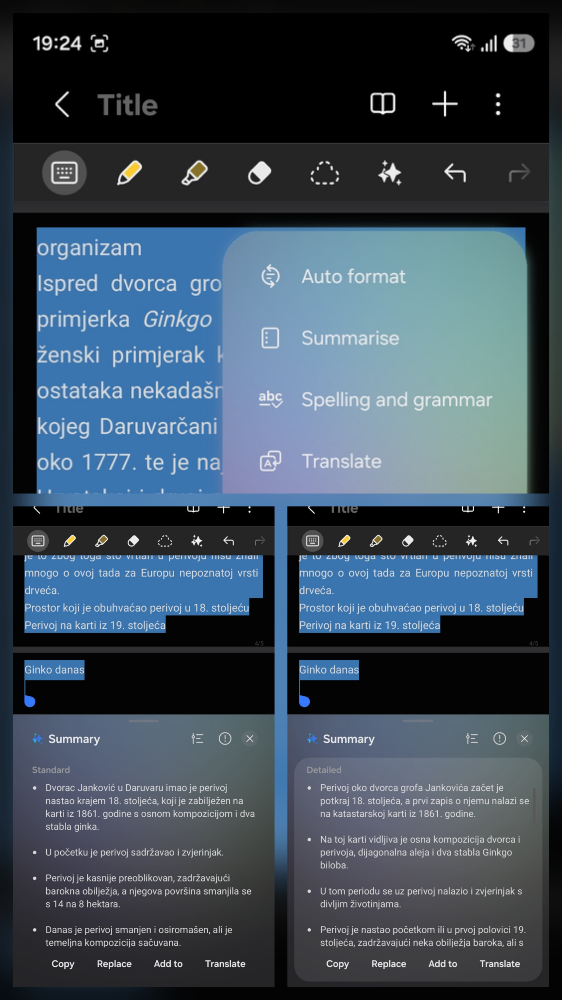
2. Live Transcribe
Transkribira govor u stvarnom vremenu s prepoznavanjem hrvatskog jezika.
Koristili smo Googleov Live Transcribe jer standardni Voice Recorder ne nudi hrvatski jezik. Live Transcribe prepoznaje hrvatski i automatski ostavlja razmake koji označavaju promjenu govornika — tako se u transkriptu vidi tko je što rekao.
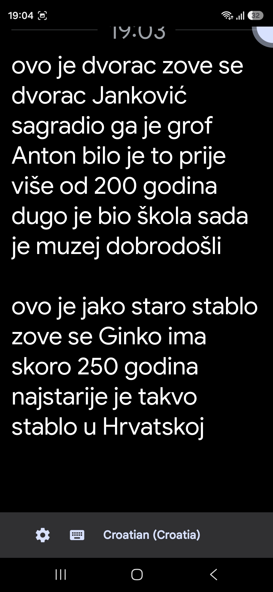
3. Circle to Search
Zaokruži bilo koji predmet na ekranu za instant pretragu.
U muzeju smo identificirali predmete čije porijeklo nismo znali, bez prekidanja razgovora s kustosom. Na primjeru sa slike, zaokružili smo odlikovanje u vitrini — AI je odmah prepoznao da se radi o Ordenu narodnog heroja, visokom vojnom odlikovanju iz bivše Jugoslavije.
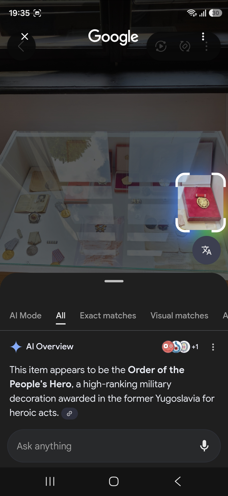
4. Generative Edit — Erase Reflections
AI uklanja refleksije stakla s fotografija eksponata.
Eksponati su iza stakla — svaka fotografija ima odsjaj rasvjete. Koristeći opciju Erase Reflections unutar Generative Edit, uklonili smo refleksije sa svih fotografija vitrina. Na slici se vidi usporedba prije i poslije na primjeru oružja iz dvorane 2. svjetskog rata.
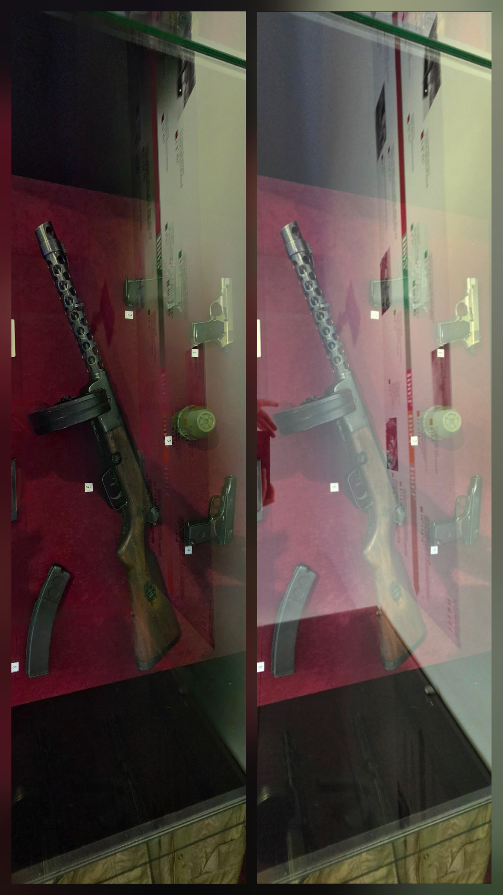
5. AI Remaster
Restaurira stare, oštećene ili mutne fotografije.
Na vanjskom plakatu muzeja jedna od fotografija bila je vidljivo mutna i degradirana. AI Remaster je izoštriti detalje i vratio čitljivost bez gubitka autentičnosti. Povucite klizač za usporedbu.
6. ProVisual Engine / AI Zoom
AI zoom do 100× koji zadržava oštrinu detalja.
U hodniku muzeja testirali smo AI Zoom na informativnoj ploči o Evi Fischer, udaljenoj 15 metara. Golim okom tekst je potpuno nečitljiv. Na 30× zoomu naslov postaje jasan i struktura ploče vidljiva. Na 100× zoomu — čak i sitni tekst postaje čitljiv. ProVisual Engine koristi AI za rekonstrukciju detalja koje optički zoom ne može uhvatiti, što omogućuje dokumentiranje eksponata i s velikih udaljenosti bez gubitka informacija.
7. Sketch to Image
Pretvara ručni crtež u realističnu sliku.
Korisnica udruge Korak dalje pokušala je nacrtati diatretni pehar — najpoznatiji arheološki nalaz iz Daruvara - zvonoliki mrežasti diatretni pehar, danas izložen u muzeju u Beču. Koristeći S Pen olovku, skicirala je obrise pehara prema fotografiji s interneta. Samsung AI je potom iz te jednostavne skice generirao vizualizaciju eksponata, u ovom slučaju bez upisivanja dodatnog prompta. Rezultat nije niti nalik navedenom peharu, ali zabava i smijeha nije nedostajalo.
8. Writing Assist — Casual
AI prilagođava ton i složenost teksta.
Proces u dva koraka: najprije smo kustosov stručni tekst proveli kroz Summarise da dobijemo sažetak, a zatim taj sažetak proveli kroz Writing Assist s opcijom Casual — tako smo dobili jednostavan, razumljiv tekst prilagođen osobama s intelektualnim teškoćama. Na slici se vidi usporedba Standard sažetka (lijevo) i Casual verzije (desno).
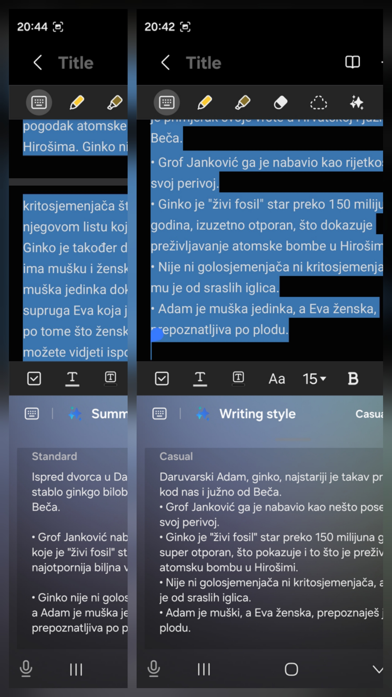
Galerija — posjet muzeju
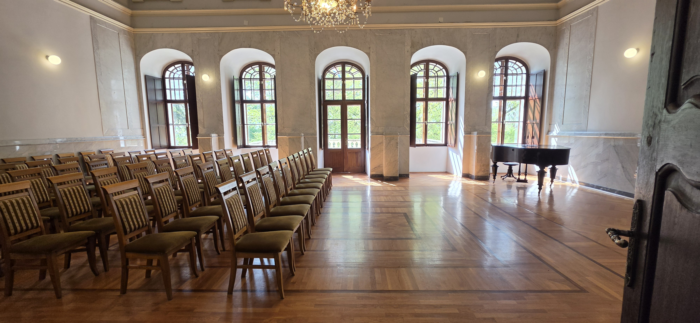
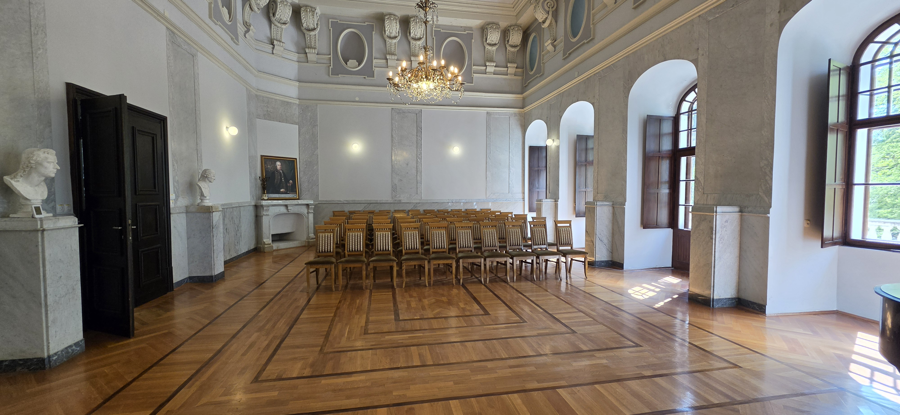
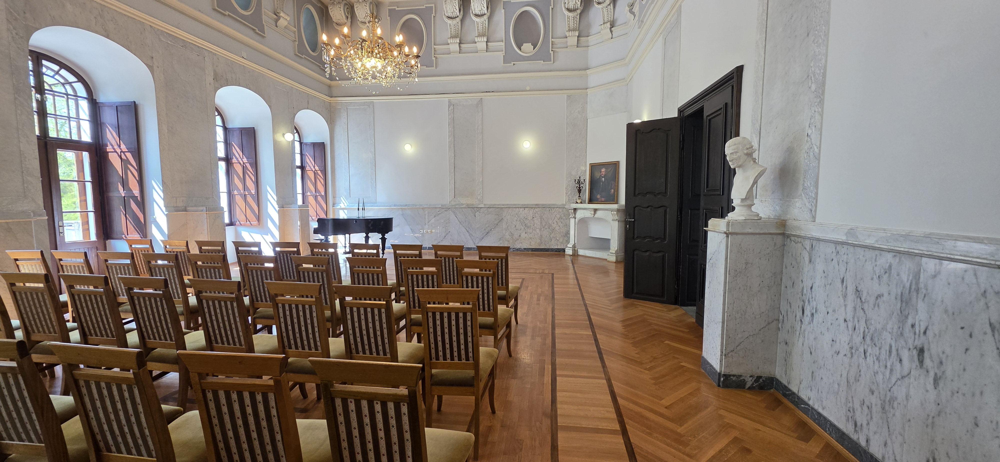
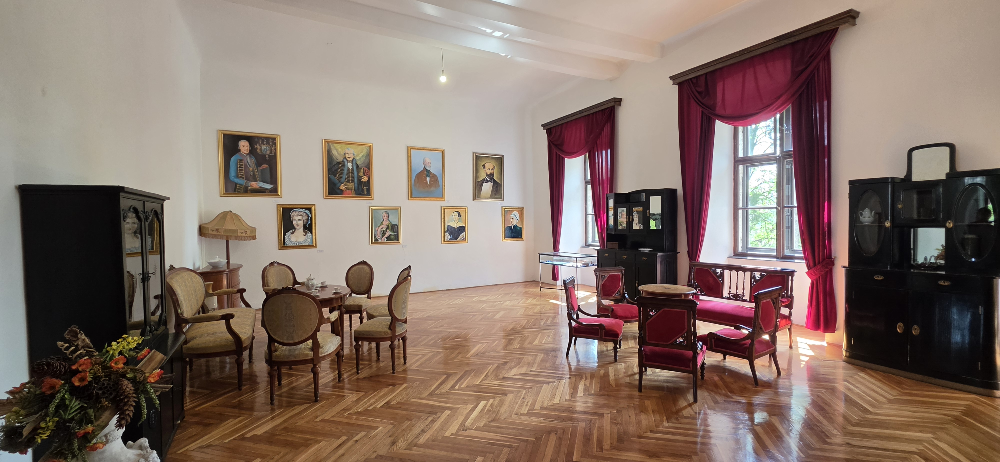
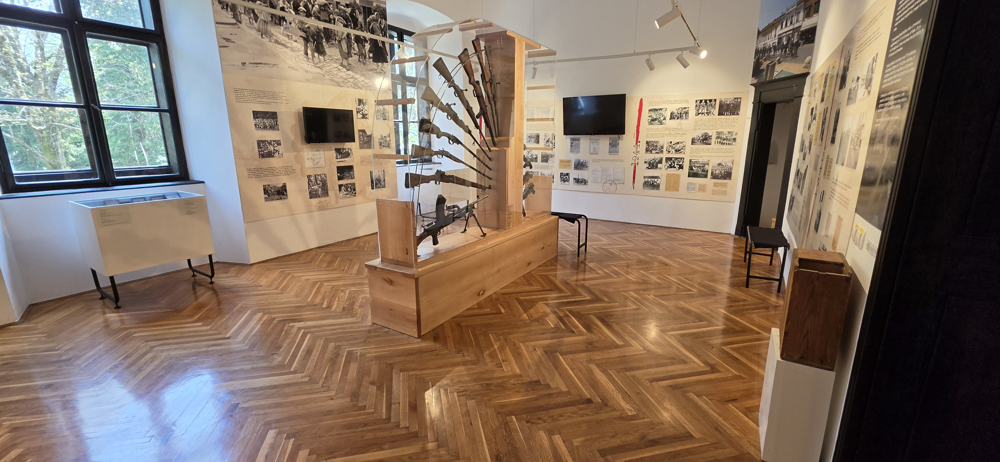
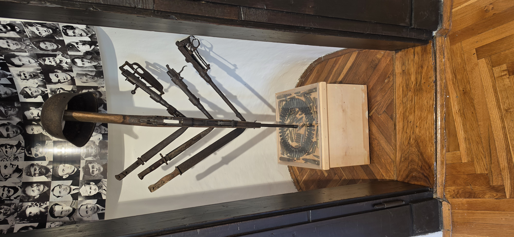
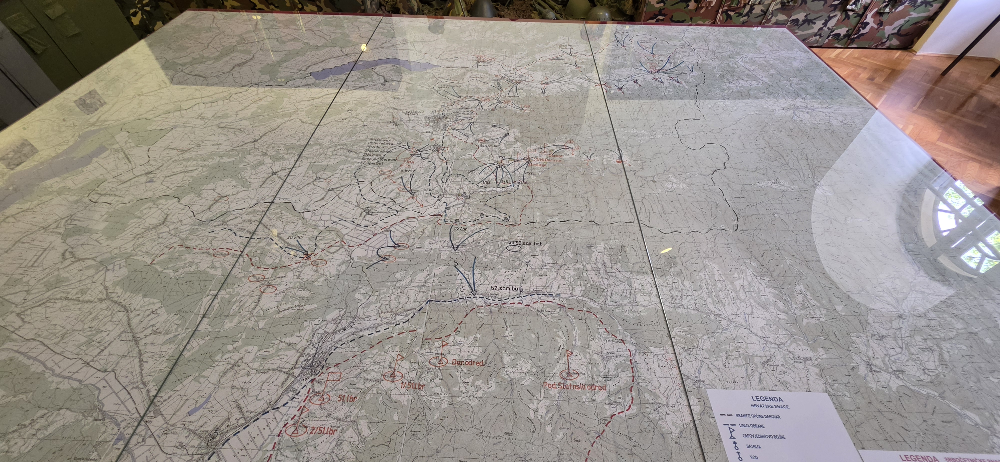

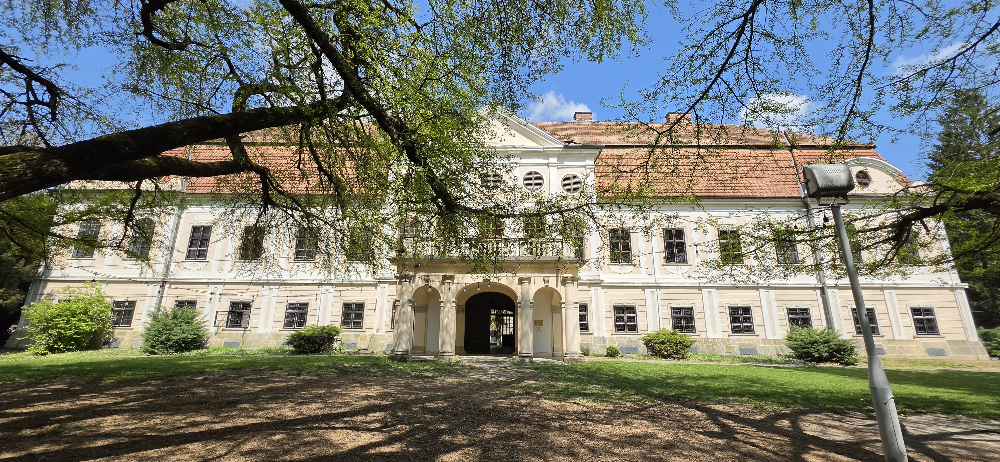
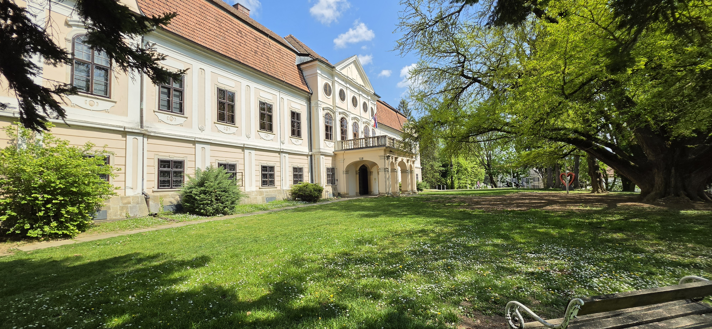
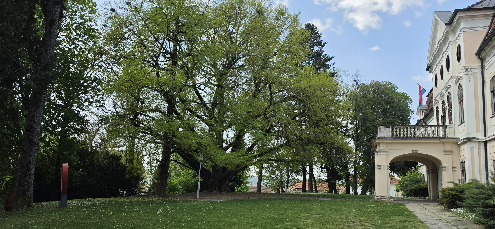
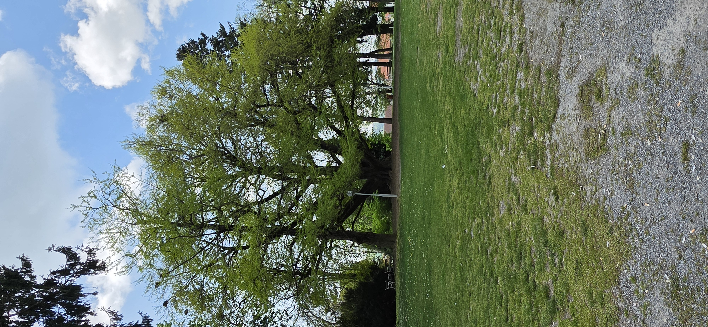

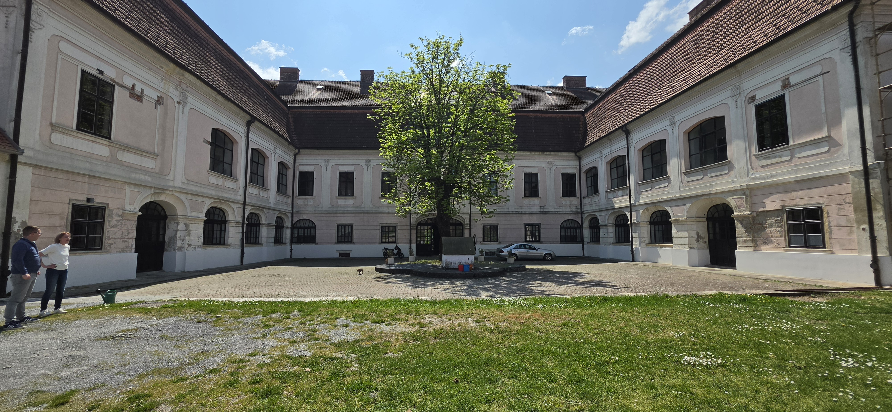
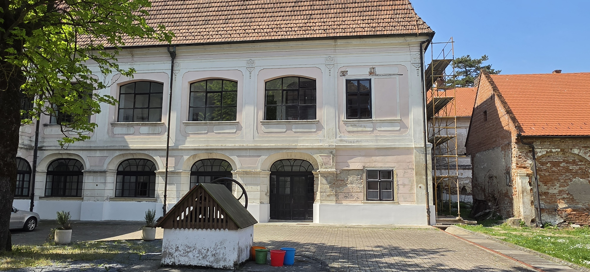